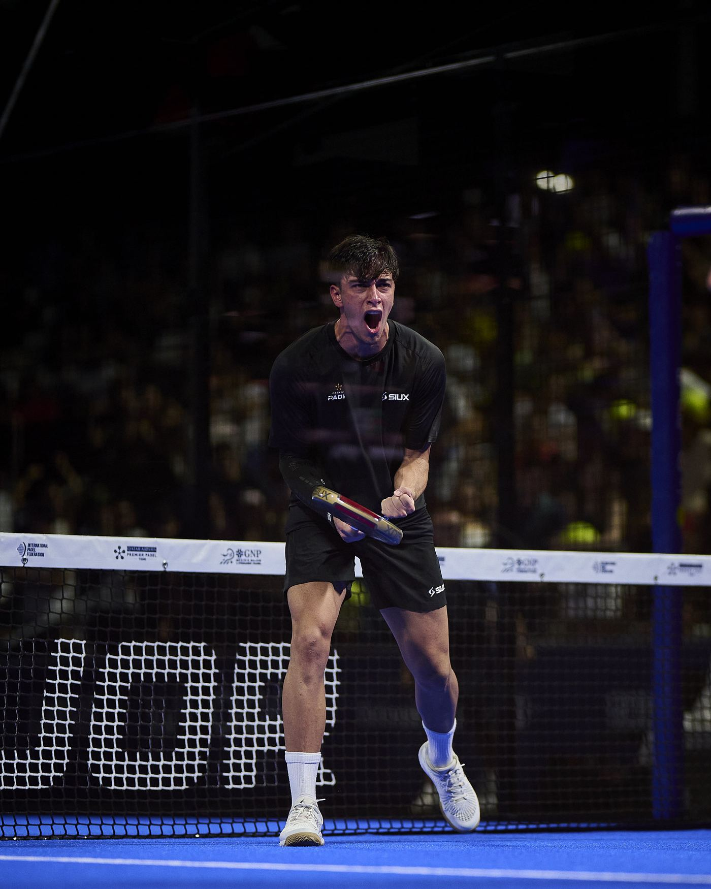

Actualidad · Major de México
Libaak y Leal se juegan las Finals de Barcelona en los cuartos de Acapulco
Los dos ganaron sus octavos en el Major de México y esta noche se cruzan, con una plaza para Barcelona en juego. Coki Nieto, campeón de las Finals en 2024, se queda fuera por tres puntos.
Por Luis González · · 4 min de lectura

Tino Libaak y Javi Leal ganaron anoche en Acapulco. Los dos.
Y ahora se juegan lo mismo. En el mismo partido.
Esta noche, en cuartos del Major de México, Libaak y Gonza Alfonso se cruzan con Leal y Fran Guerrero. En España, ya de madrugada.
Encima de la pista hay una plaza para las Finals de Barcelona.
Dos puntos
Las Finals las juegan los 16 mejores jugadores de la Race.
Alfonso está prácticamente dentro. Guerrero ya estaba clasificado. Los que esperan son sus compañeros.
En la Race del lunes, Leal tenía 3.237 puntos. Libaak, 3.235.
Dos puntos.
Los dos han llegado a cuartos, así que siguen igual de cerca. Mañana, solo uno seguirá en el cuadro.
Cómo llegan
Libaak y Alfonso ganaron a Franco Stupaczuk y Jon Sanz, terceros cabezas de serie: 7-6, 4-6 y 6-4. Más de dos horas.
Libaak tiene 21 años. Desde finales de septiembre, con Alfonso, no ha bajado de cuartos: Róterdam, Düsseldorf, Milán, Kuwait, Dubái, el FIP Platinum de Aguascalientes y ahora Acapulco. Siete torneos seguidos. En Dubái, hace dos semanas, jugaron la final.
Leal y Guerrero ganaron a Edu Alonso y Aimar Goñi: 7-6, 6-7 y 6-2. Más de dos horas y media. El partido más largo del día.
Fue una revancha. Hace un mes, en octavos del Major de Kuwait, Alonso y Goñi les ganaron.
Leal tiene 23 años. Hace tres semanas fue campeón del mundo con España en Qatar.

Se conocen de memoria
Esta noche será la cuarta vez que se cruzan en dos meses:
- Octavos de Róterdam (1 de octubre): Libaak y Alfonso, 7-5, 3-6 y 6-4.
- Dieciseisavos de Düsseldorf (7 de octubre): Libaak y Alfonso, 3-6, 7-6 y 7-5.
- Cuartos del FIP Platinum de Aguascalientes (19 de noviembre): Leal y Guerrero, 6-4 y 6-4.
Dos a uno para Libaak y Alfonso. Pero la última, hace ocho días y también en México, fue para Leal y Guerrero.
Coki se queda fuera
El que no estará en Barcelona es Coki Nieto.
Antes de los octavos, estaba a tres puntos de la última plaza. Necesitaba ganar.
Anoche, con Mike Yanguas, cayó ante Íñigo Jofre y Juanlu Esbrí: 6-3, 3-6 y 2-6. Empezaron mejor. No les alcanzó.
Según PadelSpain, se queda fuera por tres puntos.
Coki ha jugado las dos Finals que se han celebrado. En 2024 las ganó con Jon Sanz, en la final ante Coello y Tapia, que llevaban 47 victorias seguidas. En 2025 las jugó con Yanguas.
Y hace tres semanas, en la final del Mundial, ganó con Coello su partido. Enfrente estaban Libaak y Alfonso.
Yanguas sí estará en Barcelona. Coki, esta vez, no.

El resto de la noche
- Coello y Tapia (1) ganaron a Alex Ruiz y Javi García: 6-1, 6-7 y 6-0. En cuartos, Ramiro Valenzuela y Francisco Gil, que juegan los primeros de su vida en un Major tras remontar a Marc Sintes y Juan Zamora (3-6, 7-6 y 6-1).
- Lebrón y Augsburger (2) ganaron a Sanyo Gutiérrez y Maxi Sánchez: 7-6 y 6-4. Ahora, Jofre y Esbrí.
- Di Nenno y Paquito Navarro (4) ganaron a José Jiménez y Alex Chozas: 6-3 y 6-4. Ahora, Jairo Bautista y Lucas Bergamini, que ganaron a Momo González y Lucas Campagnolo (7-5 y 6-1).
Ellas: Gemma Triay y Delfi Brea (1) remontaron a Jimena Velasco y Raquel Eugenio (3-6, 6-3 y 6-3). Bea Caldera y Carmen Goenaga ganaron a Alejandra Salazar y Aranzazu Osoro (6-3 y 6-4). Y Marina Guinart y Alejandra Alonso, tras su 6-1 y 6-3 a Jessica Castelló y Nuria Rodríguez, ya tienen plaza en Barcelona, según Premier Padel.
Esta noche
Libaak, 21 años. Leal, 23.
Dos puntos en la Race.
Un partido.
Y Barcelona, al otro lado de la red.
— Luis González
Publicidad

Publicidad